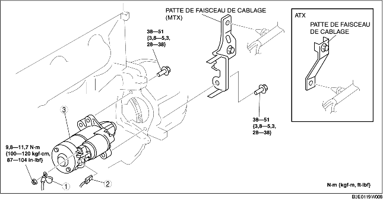

DEPOSE/REPOSE DE DEMARREUR [ZJ, Z6]
B3E011918400W03
-
Avertissement
-
• Lorsque les câbles de la batterie sont branchés, tout contact entre la carrosserie du véhicule et la borne B du démarreur provoquera des étincelles. Outre les risques de blessures et d'incendie, cela peut endommager les composants électriques. Débrancher toujours le câble négatif de la batterie avant d'effectuer l'intervention suivante.
1. Déposer le couvercle de la batterie. (voir la section DEPOSE/REPOSE DE BATTERIE [ZJ, Z6].)
2. Débrancher le câble négatif de la batterie.
3. Déposer le cache inférieur.
4. Déposer les différents éléments selon l'ordre indiqué dans le tableau.
5. Pour la repose, suivre l'ordre inverse de la dépose.

.
|
1
|
Câble de la borne B
|
|
2
|
Connecteur de borne S
|
|
3
|
Démarreur
|